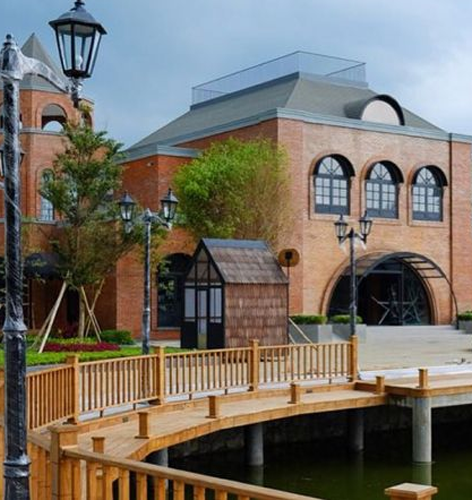

The Village Baturaden

The Village Baturraden Purwokerto merupakan Family City Park yang berlokasi di Rempoah, Kecamatan Baturraden. Taman rekreasi yang hadir dengan gaya bangunan unik klasik dan elegan ala Eropa. Konsep utamanya edukasi seputar dunia kesenian, pendidikan, budaya, dan hiburan. Luas areanya mencakup 2,8 hektar. Diresmikan pada tahun 2018 oleh Gubernur Jawa Tengah, Ganjar Pranowo. Tempat ini memiliki daya tarik tinggi dengan ciri khas kemegahan bangunan dan taman-taman indahnya.